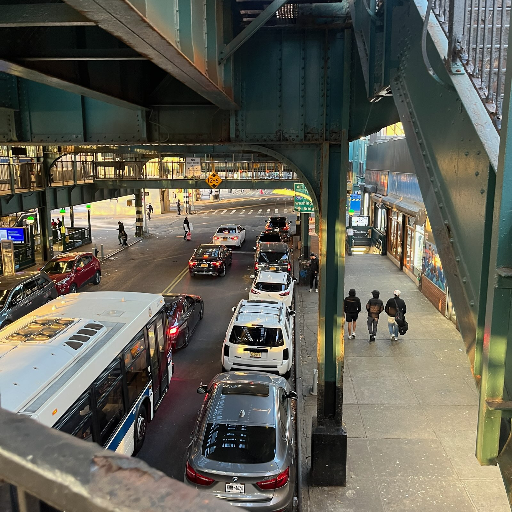

Why single women without dependents are less likely to seek shelter compared to single men and families with children.
By Mrwa Abbas
Over 90% of homeless women have experienced severe physical or sexual abuse at some point in their lives. It’s no surprise, then, that many homeless women feel uncomfortable staying in shelters with men.
There’s a false perception that women don’t face homelessness as frequently as men, but the reluctance of women staying in shelters reflects a broader issue. If you’re a woman facing homelessness, most available assistance falls into two categories: shelters and services for mothers with children, or being grouped together with homeless men.
Unfortunately, there aren’t many shelters or services specifically designed for women without children. While resources and shelters for women with children have grown significantly in recent years, this progress hasn’t extended to women without dependents. For a time, homeless mothers with children were the fastest-growing demographic in the U.S. homeless population, prompting significant resources to address this alarming trend. However, women without children have been largely overlooked, leaving them vulnerable and underserved.